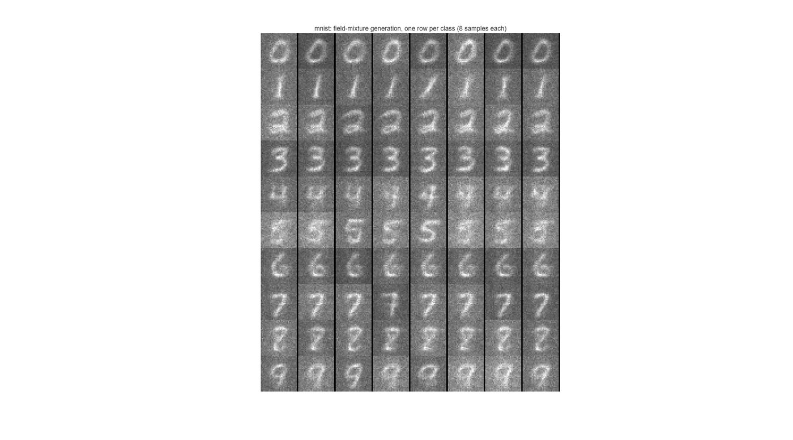
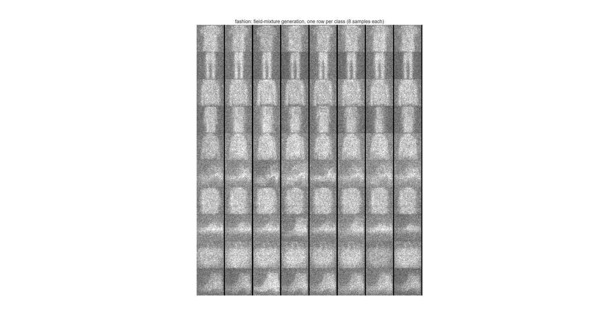
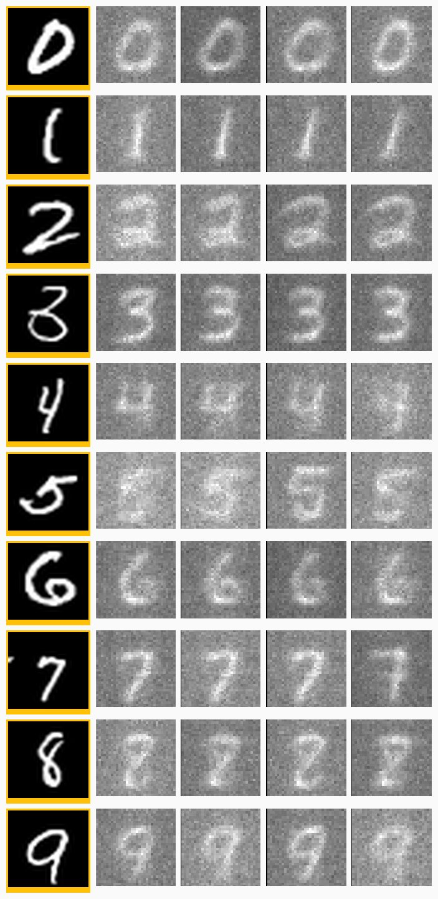
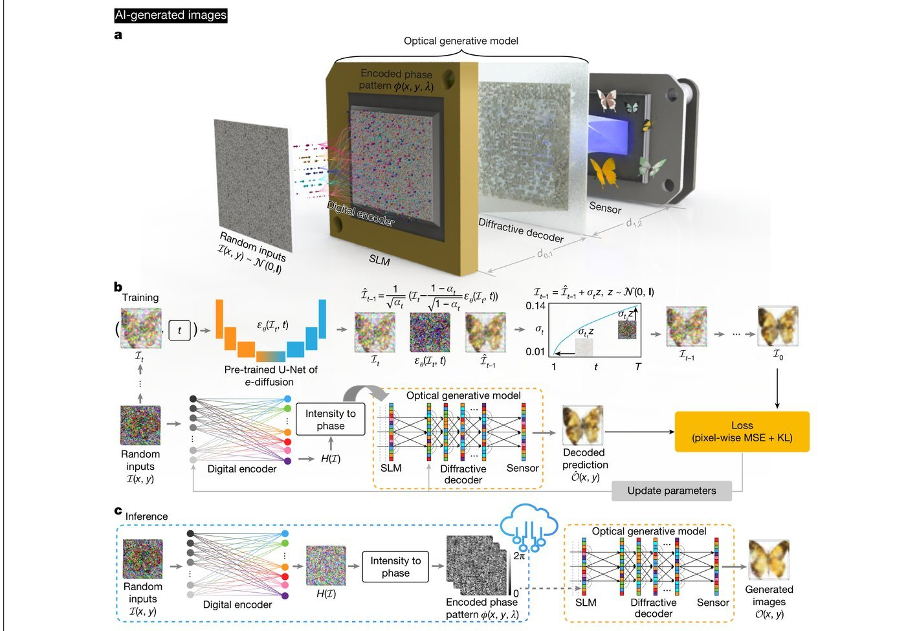
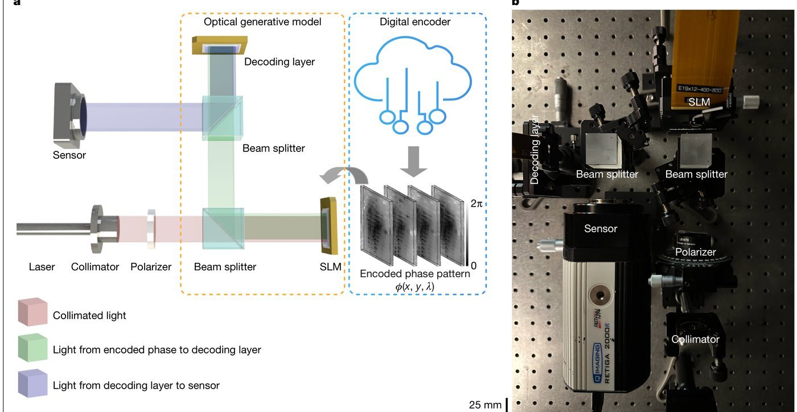
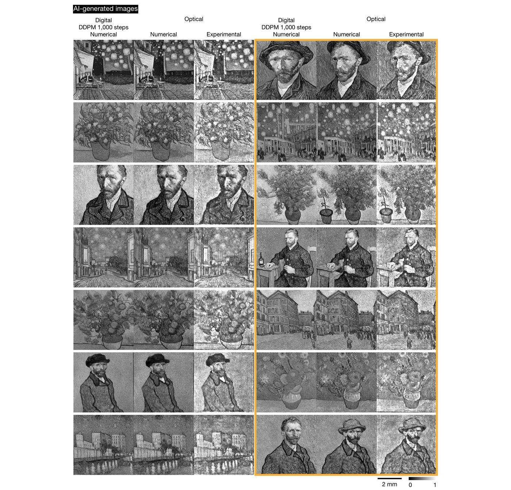
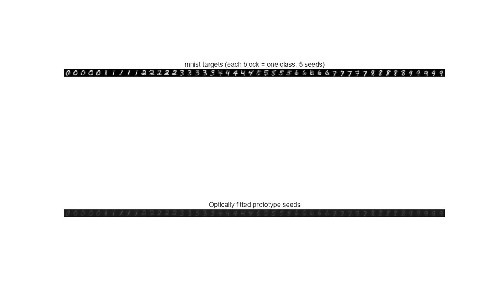
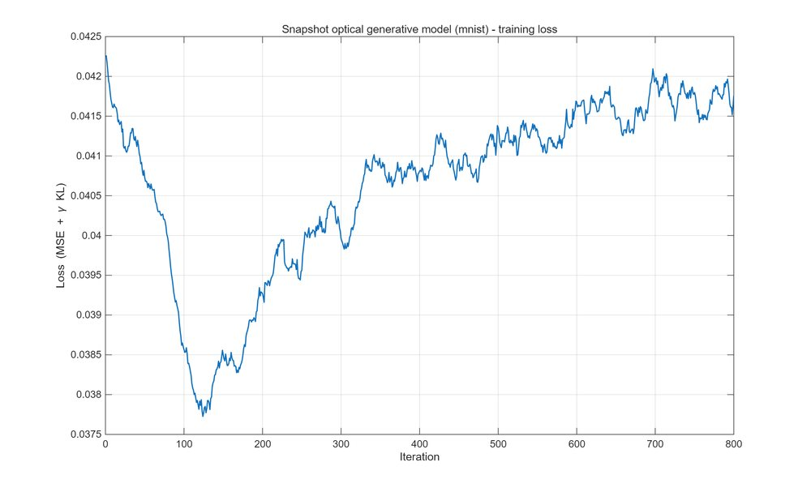

让顶刊的生成模型
在你自己的机器上跑起来
把论文里的物理链路、训练方法与生成结果，整理成可直接运行的源码、已训练模型、结果图和复现报告。 第一个收录项目是 Nature 2025《Optical generative models》——用一束光代替 GPU 做生成，本复现全程 纯 CPU 完成， MNIST / Fashion-MNIST 十个类别全部条件生成成功。
资源下载
压缩包内含全部源码、已训练模型与结果图，解压后按「使用说明」即可复现；也可直接克隆仓库，按目录取用。
光学生成模型 MATLAB 复现包
Optical Generative Models · Nature 644, 903–911 (2025)
纯 CPU 复现快照光学生成模型：相位种子 → 角谱传播 → 衍射解码层 → 传感器成像，MNIST / Fashion-MNIST 十个类别全部条件生成成功。
- ✓全部 MATLAB 源码（可微角谱传播 / 原型拟合 / 场混合生成 / 编码器蒸馏）
- ✓已训练模型
prototypes_mnist.mat / prototypes_fashion.mat，免训练直接出图 - ✓精选结果图 10 张 + 论文原图对照 + 真实样本对比
- ✓复现报告 PDF（原理 / 方法 / 结果 / 与论文差异声明）
- ✓训练日志与「使用说明」，含数据集一键下载脚本
复现成果
点击任意图片查看大图。左侧为论文原图，其余为本复现输出。

本复现 · MNIST 10 类 × 8 样本
本复现 · Fashion 10 类
对比
论文 Fig. 1
论文 Fig. 3a
论文 Fig. 4
拟合 MSE 0.0082
训练曲线复现方法
论文在数据中心 GPU 上端到端训练。本复现改用可在 CPU 上收敛的三步分解策略，最终系统的物理结构与论文一致。
可微物理链路
用 dlarray 实现可微角谱传播，梯度从传感器强度回传到 SLM 相位；SLM 区域外复数场置零（暗孔径），避免固定背景光淹没信号。
原型拟合
每类 5 个相位种子 + 共享衍射解码层，以逐任务流方式拟合「类均值 + 真实样本」混合目标，再冻结解码层抛光，平均 MSE 0.008。
场空间混合生成
类内种子做复数域随机凸组合（物理上＝多张相位图样叠加），取合成场相位再走一遍光学前向，即可无限采样新的类别样本。
四行命令上手
已训练模型随仓库提供，无需重训即可生成结果图；完整重训见仓库 README。
# 1. 取代码 $ git clone https://github.com/Alice-P197/paper-repro-lab.git $ cd paper-repro-lab/reproductions/optical-generative-models/matlab # 2. 下载数据集（约 12 MB，自动解压） $ matlab -batch "download_data('mnist')" # 3. 免训练直接生成 —— 读入已训练模型，输出 10 类 × 8 样本 $ matlab -batch "quickstart" # 4.（可选）从零重训：每个数据集约 18 分钟（纯 CPU） $ matlab -batch "setenv('OGEN_DATASET','mnist'); train_prototypes"
下一个复现
本页是长期复现档案库：每完成一篇论文，就在下方新增一张卡片与一个 Release，下载入口始终是这两个位置。